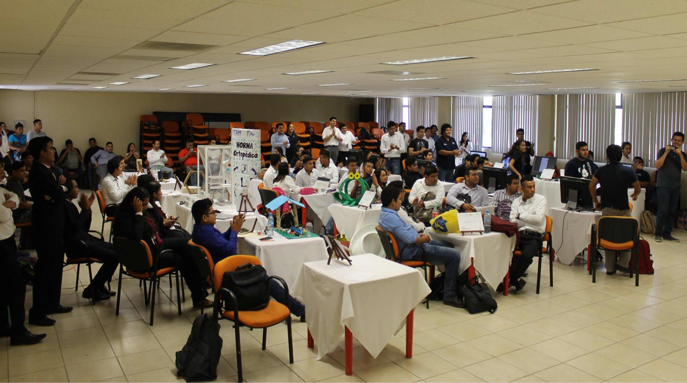

<div class="talleres">
  <div class="container">
    <div class="row">
      <div class="col-xl-6 col-lg-6 col-md-6 col-sm-12 mr-5 mx-auto">
        <div class="row" data-aos="fade-right">
          <h2>
            <span class="badge badge-talleres">
              <i class="fas fa-tasks"></i>
            </span>
            Talleres
          </h2>
          
          <p>
            Se contará con sesiones de entrenamiento durante la duración del
            congreso. El trabajo por talleres es una estrategia pedagógica que
            además de abordar el contenido de una asignatura, enfoca sus acciones
            hacia el saber hacer, es decir, hacia la práctica de una actividad.
          </p>
        </div>
      </div>
      <div class="col-xl-5 col-lg-5 col-md-5 col-sm-10 my-auto mx-auto">
        <div class="row" data-aos="fade-left">
          
        </div>
      </div>
    </div>
  </div>

</div>